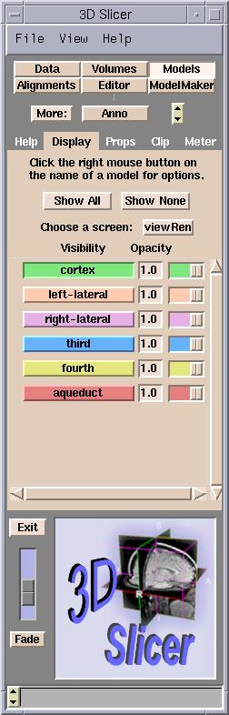
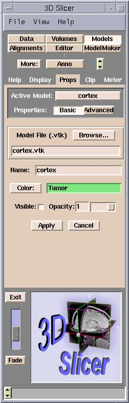

Opacity is how non-transparent a model is. (The higher the opacity, the less transparent the model is.)
You can control the Opacity of each model.
By default, Slicer creates models that are completely opaque (opacity = 1).
Setting the opacity to 0 makes the model completely transparent.
Adjust the opacity in either of two ways:
On the Display tab of the Models panel, adjust the Opacity slider next to the model's name in the model list.

On the Props tab of the Models panel, set the Active Model, and use the Opacity slider below.
